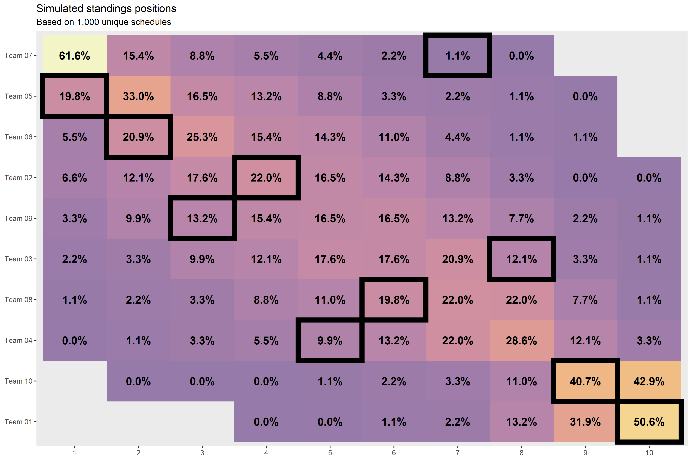

basic-usage.Rmd
library(dplyr)
#>
#> Attaching package: 'dplyr'
#> The following objects are masked from 'package:stats':
#>
#> filter, lag
#> The following objects are masked from 'package:base':
#>
#> intersect, setdiff, setequal, union
library(magrittr)
library(ffsched)
# Just for plotting
library(ggplot2)
library(forcats)
library(scales)
league_id <- 899513
weeks <- 12
league_size <- 10
season <- 2020
sims <- 1000
tries <- 0.1 * simsSimulate 1000 unique schedules for a 10-team league for the first 12 weeks. Note that you don’t need the league_id for this!
set.seed(42) # For repoducibility
sched_sims <-
generate_schedules(
league_size = league_size,
sims = sims,
tries = tries
)
sched_sims
#> [90m# A tibble: 120,000 x 4[39m
#> idx_sim week team_id opponent_id
#> [3m[90m<int>[39m[23m [3m[90m<dbl>[39m[23m [3m[90m<int>[39m[23m [3m[90m<int>[39m[23m
#> [90m 1[39m 1 1 1 2
#> [90m 2[39m 1 1 2 1
#> [90m 3[39m 1 1 3 8
#> [90m 4[39m 1 1 4 5
#> [90m 5[39m 1 1 5 4
#> [90m 6[39m 1 1 6 7
#> [90m 7[39m 1 1 7 6
#> [90m 8[39m 1 1 8 3
#> [90m 9[39m 1 1 9 10
#> [90m10[39m 1 1 10 9
#> [90m# … with 119,990 more rows[39mGet fantasy football scores from ESPN.
scores <-
scrape_espn_ff_scores(
league_id = league_id,
league_size = league_size,
season = season,
weeks = weeks
)
scores
#> [90m# A tibble: 120 x 14[39m
#> team_id opponent_id team week team_home_id team_away_id points_home
#> [3m[90m<dbl>[39m[23m [3m[90m<dbl>[39m[23m [3m[90m<chr>[39m[23m [3m[90m<dbl>[39m[23m [3m[90m<dbl>[39m[23m [3m[90m<dbl>[39m[23m [3m[90m<dbl>[39m[23m
#> [90m 1[39m 1 4 The … 1 4 1 130.
#> [90m 2[39m 1 5 The … 2 5 1 163.
#> [90m 3[39m 1 3 The … 3 3 1 119.
#> [90m 4[39m 1 8 The … 4 8 1 95.2
#> [90m 5[39m 1 7 The … 5 7 1 127.
#> [90m 6[39m 1 2 The … 6 2 1 146.
#> [90m 7[39m 1 6 The … 7 6 1 101.
#> [90m 8[39m 1 10 The … 8 10 1 152.
#> [90m 9[39m 1 9 The … 9 9 1 138.
#> [90m10[39m 1 5 The … 10 5 1 162.
#> [90m# … with 110 more rows, and 7 more variables: points_away [3m[90m<dbl>[90m[23m,[39m
#> [90m# team_home [3m[90m<chr>[90m[23m, team_away [3m[90m<chr>[90m[23m, team_winner_id [3m[90m<dbl>[90m[23m, pf [3m[90m<dbl>[90m[23m, pa [3m[90m<dbl>[90m[23m,[39m
#> [90m# is_winner [3m[90m<lgl>[90m[23m[39mJoin the simulated schedules and the actual scores together to come up with simulated standings.
anonymize_teams <- function(data) {
data %>%
mutate(
across(team, ~sprintf('Team %02d', team_id))
)
}
scores_by_team <- scores %>% select(team_id, team, week, pf)
scores_sims <-
sched_sims %>%
left_join(
scores_by_team,
by = c('week', 'team_id')
) %>%
left_join(
scores_by_team %>%
dplyr::rename(opponent_id = .data$team_id, opponent = .data$team, pa = .data$pf),
by = c('week', 'opponent_id')
) %>%
mutate(
w = if_else(pf > pa, 1L, 0L)
)
standings_sims <-
scores_sims %>%
group_by(idx_sim, team, team_id) %>%
summarize(
across(c(pf, w), sum)
) %>%
ungroup() %>%
group_by(idx_sim) %>%
mutate(
rank_w = min_rank(-w)
) %>%
ungroup() %>%
group_by(idx_sim, rank_w) %>%
mutate(
rank_tiebreak = row_number(-pf) - 1L
) %>%
ungroup() %>%
mutate(rank = rank_w + rank_tiebreak) %>%
select(-rank_w, -rank_tiebreak) %>%
anonymize_teams()
standings_sims
#> [90m# A tibble: 10,000 x 6[39m
#> idx_sim team team_id pf w rank
#> [3m[90m<int>[39m[23m [3m[90m<chr>[39m[23m [3m[90m<dbl>[39m[23m [3m[90m<dbl>[39m[23m [3m[90m<int>[39m[23m [3m[90m<int>[39m[23m
#> [90m 1[39m 1 Team 10 10 [4m1[24m336. 5 8
#> [90m 2[39m 1 Team 08 8 [4m1[24m480. 6 6
#> [90m 3[39m 1 Team 02 2 [4m1[24m561. 7 4
#> [90m 4[39m 1 Team 04 4 [4m1[24m448. 3 9
#> [90m 5[39m 1 Team 06 6 [4m1[24m609. 10 1
#> [90m 6[39m 1 Team 03 3 [4m1[24m484. 6 5
#> [90m 7[39m 1 Team 09 9 [4m1[24m562. 5 7
#> [90m 8[39m 1 Team 01 1 [4m1[24m313. 2 10
#> [90m 9[39m 1 Team 05 5 [4m1[24m620. 7 3
#> [90m10[39m 1 Team 07 7 [4m1[24m677. 9 2
#> [90m# … with 9,990 more rows[39mstandings_sims can be achieved by using the do_simulate_standings function, which wraps the functionality demonstrated above.
standings_sims <-
do_simulate_standings(
league_id = league_id,
league_size = league_size,
season = season,
weeks = weeks,
sims = sims,
tries = tries
) %>%
anonymize_teams()
standings_sims
#> [90m# A tibble: 10,000 x 6[39m
#> idx_sim team team_id pf w rank
#> [3m[90m<int>[39m[23m [3m[90m<chr>[39m[23m [3m[90m<dbl>[39m[23m [3m[90m<dbl>[39m[23m [3m[90m<int>[39m[23m [3m[90m<int>[39m[23m
#> [90m 1[39m 1 Team 10 10 [4m1[24m336. 5 8
#> [90m 2[39m 1 Team 08 8 [4m1[24m480. 6 6
#> [90m 3[39m 1 Team 02 2 [4m1[24m561. 7 4
#> [90m 4[39m 1 Team 04 4 [4m1[24m448. 3 9
#> [90m 5[39m 1 Team 06 6 [4m1[24m609. 10 1
#> [90m 6[39m 1 Team 03 3 [4m1[24m484. 6 5
#> [90m 7[39m 1 Team 09 9 [4m1[24m562. 5 7
#> [90m 8[39m 1 Team 01 1 [4m1[24m313. 2 10
#> [90m 9[39m 1 Team 05 5 [4m1[24m620. 7 3
#> [90m10[39m 1 Team 07 7 [4m1[24m677. 9 2
#> [90m# … with 9,990 more rows[39mMake an interesting plot.
standings_sims_n <-
standings_sims %>%
count(team_id, team, rank, sort = TRUE) %>%
group_by(team_id, team) %>%
mutate(frac = n / sum(n)) %>%
ungroup()
standings_sims_n
standings_sims_n_top <-
standings_sims_n %>%
group_by(rank) %>%
slice_max(n, with_ties = FALSE) %>%
ungroup()
standings_sims_n_top
standings_sims_n_top <-
standings_sims_n %>%
group_by(team) %>%
summarize(
tot = sum(n),
rank_avg = sum(rank * n) / tot
) %>%
ungroup() %>%
mutate(rank_tot = row_number(rank_avg)) %>%
arrange(rank_tot)
standings_sims_n_top
standings_actual <-
scores %>%
anonymize_teams() %>%
mutate(w = if_else(pf > pa, 1, 0)) %>%
group_by(team, team_id) %>%
summarize(
across(c(w, pf), sum)
) %>%
ungroup() %>%
mutate(rank_w = min_rank(-w)) %>%
group_by(rank_w) %>%
mutate(
rank_tiebreak = row_number(-pf) - 1L
) %>%
ungroup() %>%
mutate(rank = rank_w + rank_tiebreak)
standings_actual
factor_cols <- function(data) {
data %>%
left_join(
standings_sims_n_top %>%
select(team, rank_tot, rank_avg)
) %>%
left_join(standings_actual) %>%
mutate(
across(team, ~fct_reorder(.x, -rank_tot)),
across(rank, ordered)
)
}
pts <- function(x) {
as.numeric(grid::convertUnit(grid::unit(x, 'pt'), 'mm'))
}
viz_standings_tile <-
standings_sims_n %>%
factor_cols() %>%
ggplot() +
aes(x = rank, y = team) +
geom_tile(aes(fill = frac), alpha = 0.5, na.rm = FALSE) +
geom_tile(
data = standings_actual %>% factor_cols(),
fill = NA,
color = 'black',
size = 3
) +
geom_text(
aes(label = percent(frac, accuracy = 1.1)),
color = 'black',
size = pts(14),
fontface = 'bold'
) +
scale_fill_viridis_c(option = 'B', begin = 0.2, end = 1) +
guides(fill = FALSE) +
theme(
panel.grid.major = element_blank(),
panel.grid.minor = element_blank(),
) +
labs(
title = 'Simulated standings positions',
subtitle = sprintf('Based on %s unique schedules', comma(sims)),
x = NULL,
y = NULL
)
viz_standings_tile